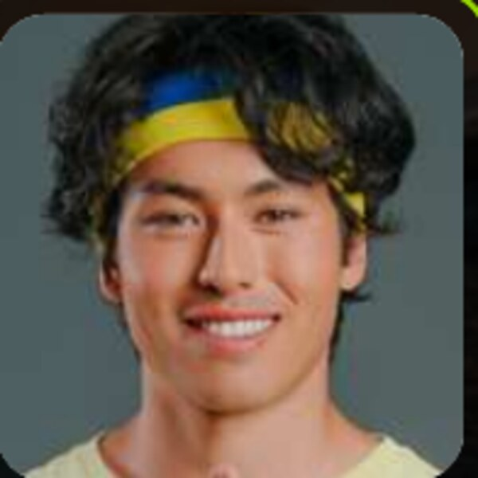
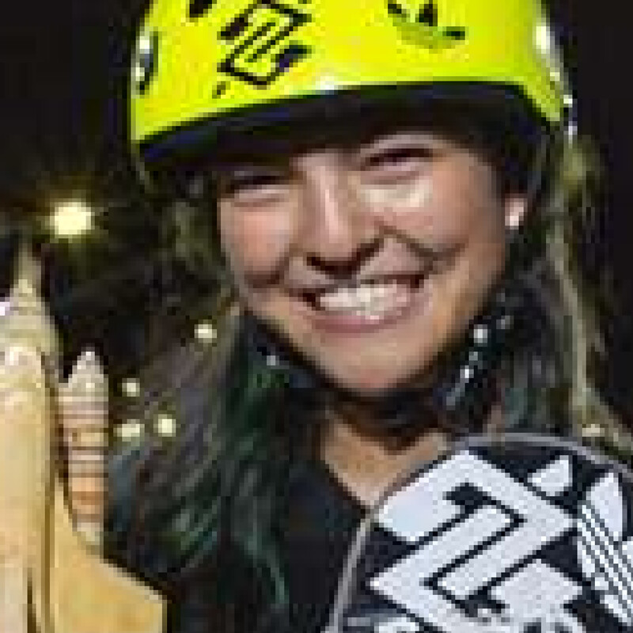
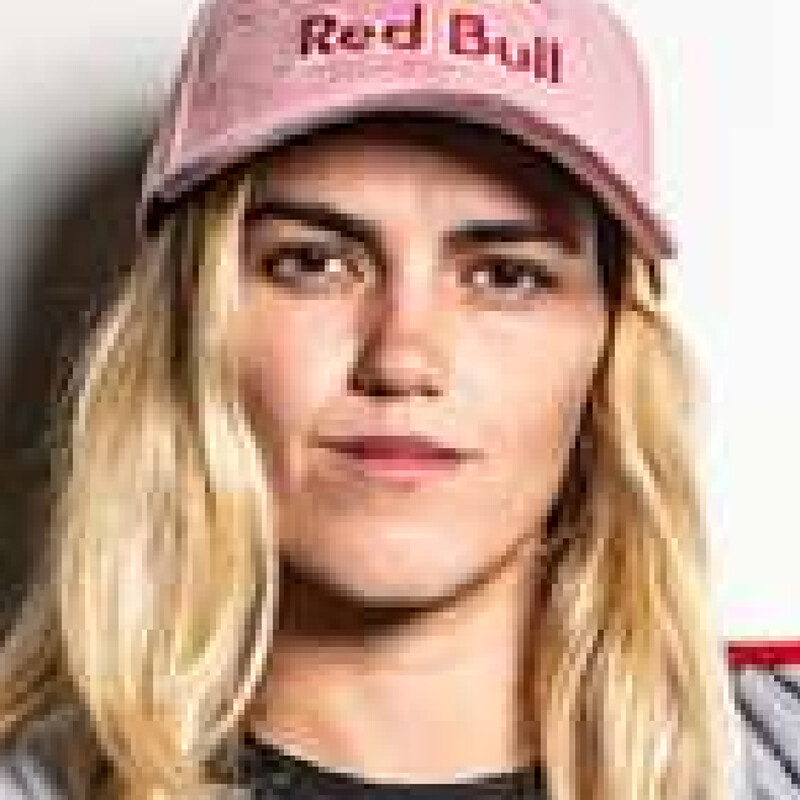
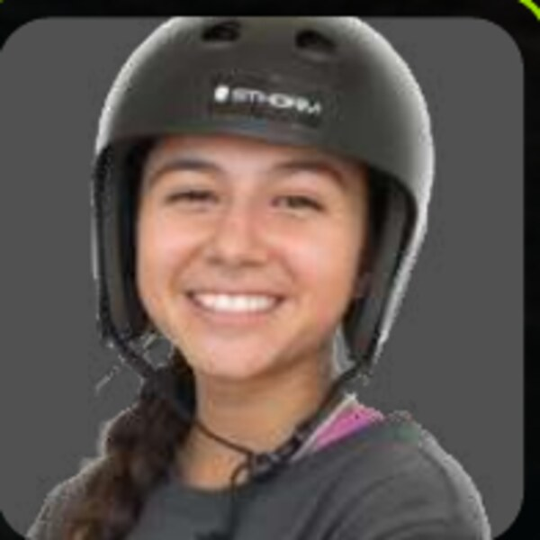
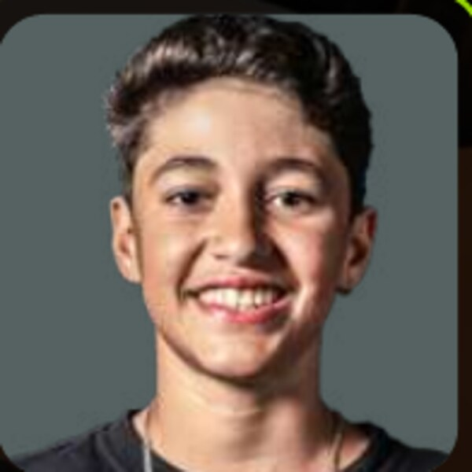
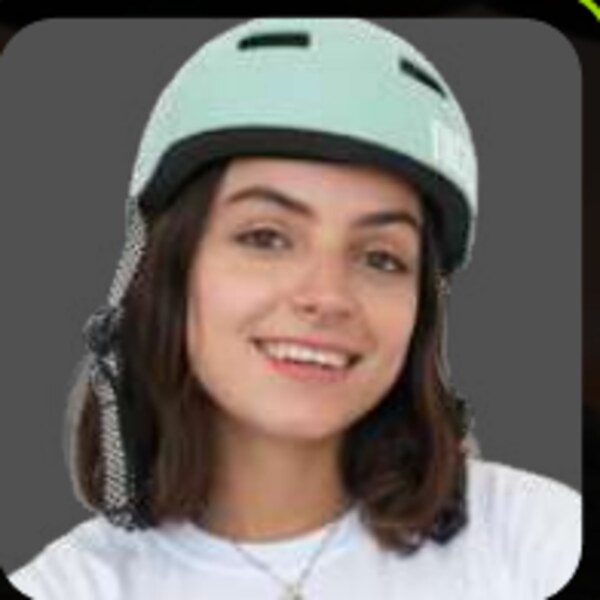
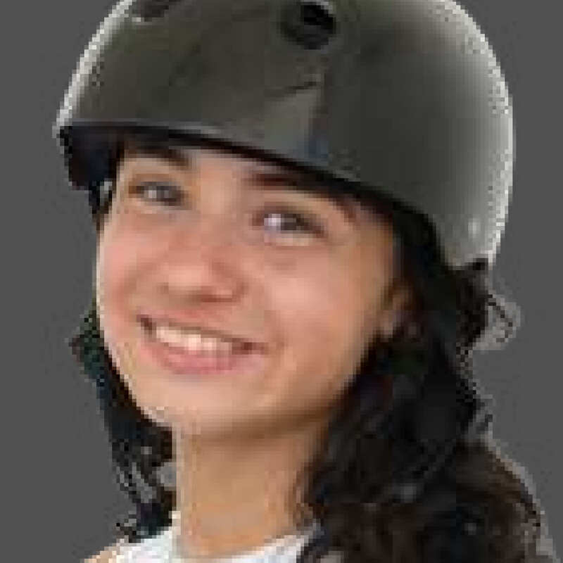
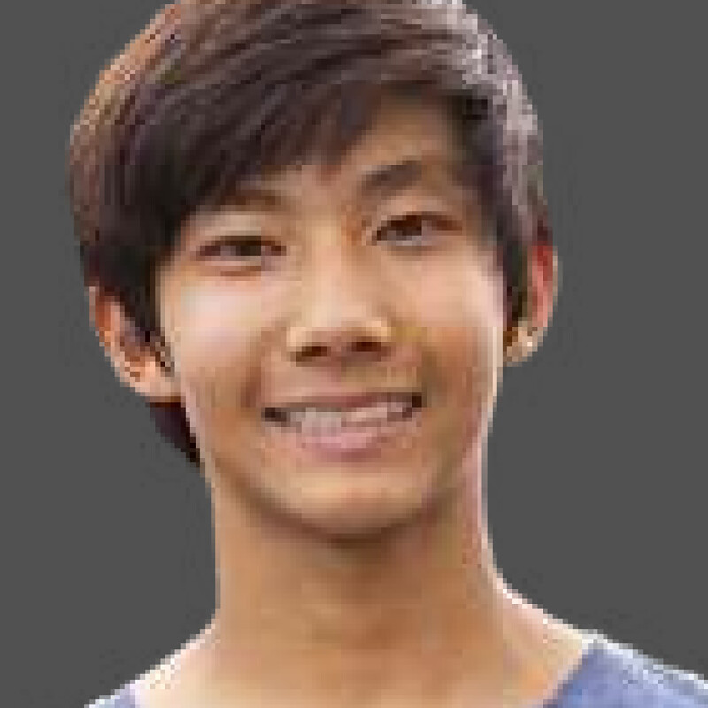
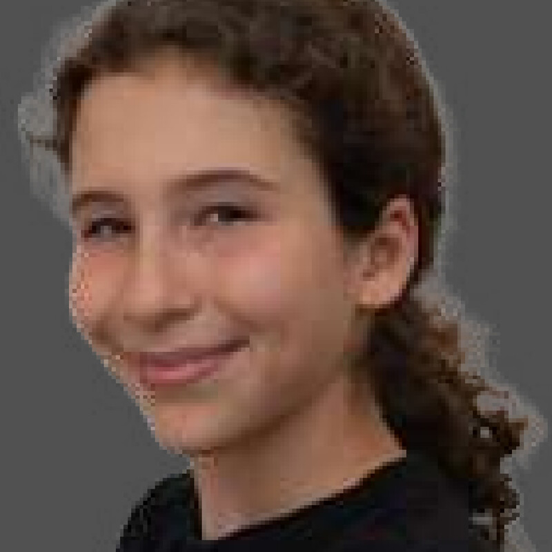

PRODUTORA.
Uma produtora de eventos, esporte e cultura que trabalha com registro: cada projeto do acervo carrega a fonte do que afirma.
NOSSA HISTÓRIA.
Cadillac Produções e Filmes Ltda., CNPJ 18.083.967/0001-40, registrada em 8 de maio de 2013, no Rio de Janeiro.
O registro do TCM-PA identifica a Cadillac como contratada para a apresentação de André Frateschi na Festa dos Visitantes, dentro do XXIV Festival de Tribos, no Pará.
Ver a ediçãoA empresa é proponente do projeto, aprovado para captação. O desenho do festival previa oito modalidades, 26 dias de atividade e programação cultural em oito pontos de Niterói.
Ver a ediçãoA primeira edição do festival do Banco do Brasil, na Arena das Dunas, reúne skate, vôlei de praia, surfe, corrida e e-Sports com mais de 100 mil pessoas circulando.
Ver a ediçãoQuatro etapas do Campeonato Brasileiro de Skate Vertical, de Goiânia a Fortaleza, com transmissão da Globo e do SporTV. O material oficial da temporada é assinado pela Cadillac Production.
Ver a ediçãoItacoatiara Pro na 14ª edição, turnê Dominguinho, Connect Heroes na estreia, skate dentro do MAC Bahia e a entrada no Mr. Moo Festival.
Ver a ediçãoCada marco desta linha tem a fonte na página do projeto correspondente. Não registrar um ano aqui não significa ausência de trabalho naquele ano.
MANIFESTO.
A gente faz o extraordinário acontecer.
Do primeiro rabisco ao último aplauso.
O impossível não entra na planilha.
Não é só o que acontece. É o que fica.
Evento é uma coisa que termina. O que a gente faz, não. Fica nas pessoas que estiveram ali, nas imagens, na imprensa, na cidade que foi ocupada por alguns dias e não voltou a ser exatamente a mesma. Por isso a Cadillac não trata um projeto como uma data no calendário, e sim como uma história que continua sendo contada depois.
Trabalhar com esporte e cultura no Brasil é articular gente que não se encontraria sozinha: atleta e museu, banco e skate, orquestra e praia, jiu-jítsu e televisão. Nosso trabalho é fazer esse encontro acontecer com estrutura, e fazer com que ele signifique alguma coisa para quem esteve lá e para quem pagou a conta.
E é por isso que este site mostra a origem de cada número que publica. Quem produz experiência vive de confiança. Número sem fonte é adjetivo.
NOSSO
TIME.
Equipe
Ver a equipeAtletas
Ver as fichas
Augusto AkioSkate park e verticalAna PatríciaVôlei de praiaDudaVôlei de praia Gui KhurySkate vertical
Gui KhurySkate vertical Helena LaurinoSkate vertical
Helena LaurinoSkate vertical Luigi CiniSkate park e vertical
Luigi CiniSkate park e vertical
Raicca VenturaSkate park e verticalDavison FortunatoSkate streetDaniela VitóriaSkateFelipe NunesSkateNando AraújoSkateMarina GabrielaSkateFilipe MotaSkateTatiana Weston-WebbSurfeFilipe ToledoSurfeTainá HinckelSurfeSilvana LimaSurfeJuliana SantosSurfe Dan SabinoSkate verticalRony GomesSkate verticalDora VarellaSkate park e vertical
Dan SabinoSkate verticalRony GomesSkate verticalDora VarellaSkate park e vertical
Yndiara AspSkate park e vertical
Marina LimaSkate vertical
Pietro NunesSkate vertical
Lua VicenteSkate vertical
Manu TomitakeSkate vertical Dan CezarSkate vertical
Dan CezarSkate vertical
Diego TakahashiSkate vertical
Sofia CuriSkate verticalThomas AugustoSkate verticalMaria Luiza SantiagoSkate verticalJD SanchezSkate verticalArisa TrewSkate verticalPedro BarrosSkate park e verticalIsadora PachecoSkate parkItalo PenarrubiaSkateVitor FerreiraSurfeArtistas
Ver o elencoNOSSA ESSÊNCIA.
MISSÃO.
Produzir experiências de esporte e cultura que conectem marcas, territórios e pessoas, com operação que se sustenta no detalhe e com registro verificável do que foi entregue.
VISÃO.
Ser a produtora brasileira de referência quando a entrega precisa unir escala de público, complexidade operacional e prestação de contas que um patrocinador consegue auditar.
VALORES.
Procedência antes de alarde: todo número tem origem declarada. Respeito ao território e a quem vive nele. Cuidado com quem opera, dentro e fora do palco. Clareza com o cliente, inclusive sobre o que ainda não se sabe.
OBJETIVOS.
Consolidar as propriedades do acervo como circuitos recorrentes, ampliar a frente de captação para projetos de terceiros, fechar a documentação operacional de cada edição e manter uma série histórica de público e audiência que melhore a cada temporada.